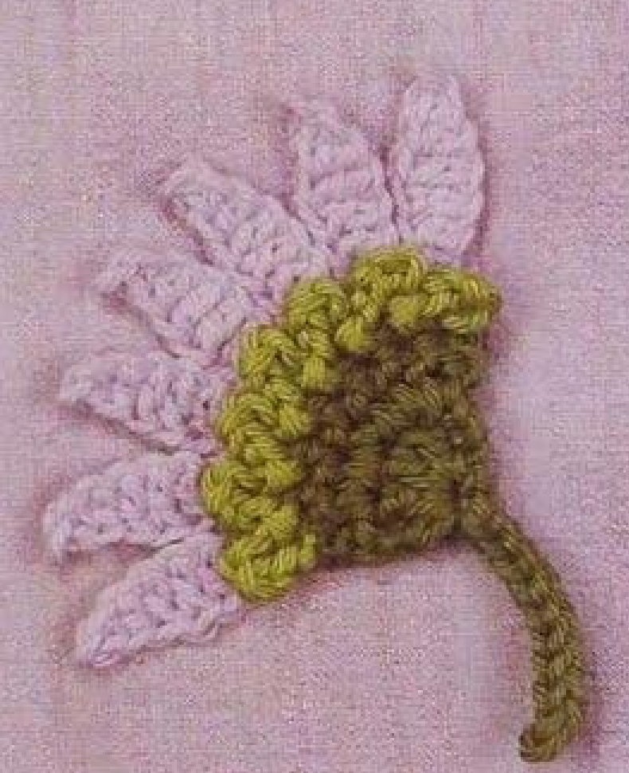
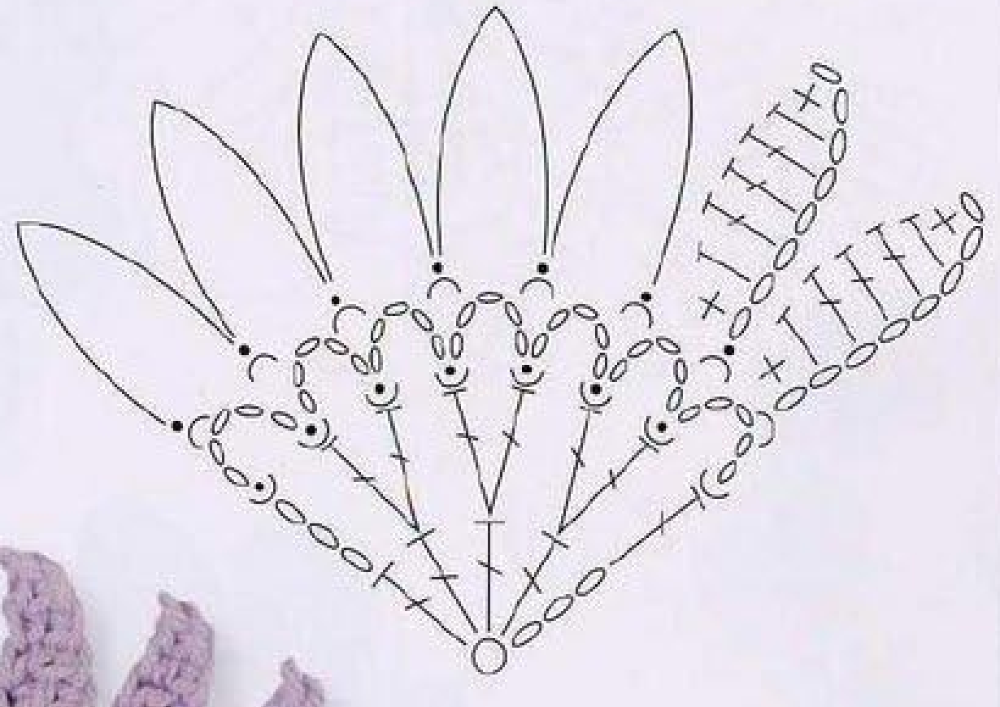
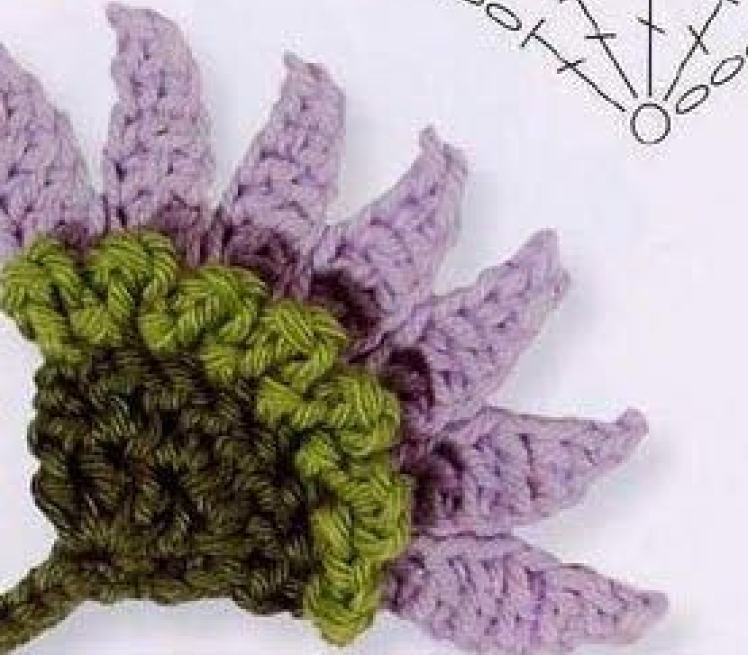

Crochet Aster in this source is a side-view fan with seven narrow mauve petals, pale-green front loops, and a dark-green center and stem. The center is worked in rows rather than joined into a complete circular daisy. This guide follows pattern 60 in Lesley Stanfield’s 100 Flowers to Knit & Crochet, preserving its fan shape, strand placements, and retained-end stem in US crochet terms.

Key Takeaways
- Use 4-ply cotton in dark green A, pale green B, and mauve C.
- Leave a long starting A end; it is used later to make the stem.
- The center grows from five counted positions in row 1 to eight in row 2.
- Seven pale-green chain loops attach to front strands of row 2.
- Seven mauve petals attach behind the loops to the back strands of that same row.
- Pull the retained A end through the base ring, then make a ten-chain stem with nine return slip stitches.
CROCHET ASTER FLOWER PATTERN
Project: One side-view cotton fan flower with seven petals and a stem. The source places this entry among intermediate designs. Instructions below use US terms. Hook, gauge, yarn quantity, dimensions, and exact long-end length are not specified.
| Skill level | Intermediate designs in the source. Practical guidance: identify front and back strands, follow row-end locations, and work a stem from a retained end. |
|---|---|
| Base size | One fan-shaped Aster with 7 mauve petals and a stem. Finished dimensions are not specified. |
| Yarn | 4-ply cotton: dark green A, pale green B, mauve C. |
| Quantity, hook, gauge | Not specified. Choose a hook suited to the cotton and assess the first two center rows. |
| Notions | Scissors and a blunt needle for invisible finishes. Retain the long starting A end for the stem. |
| US abbreviations | ch = chain; sc = single crochet; hdc = half double crochet; dc = double crochet; sl st = slip stitch; RS = right side. UK dc = US sc; UK htr = US hdc; UK tr = US dc. |
| Foundation | With A and leaving a long end, make an adjustable slip ring. |
| Row 1, RS | Ch 3, work 4 dc in the ring, and pull the end to close the ring. 5 counted positions. |
| Row 2 | Ch 3, work 2 dc in each of the next 3 dc, and 1 dc in the top chain of the previous ch 3. 8 counted positions. Fasten off. |
| Row 3 | Join B in the front strand at the top of the last dc. [Ch 5, sl st in the front strand of the next dc] 6 times. Ch 5, sl st in the front strand of the top chain of the starting ch 3. 7 loops. Fasten off invisibly. |
| Row 4 | With RS facing, fold the loops forward and join C in the back strand of the end dc of row 2. [Ch 8, skip 1 chain, sc in the next chain, hdc in the next, dc in each of the next 3 chains, hdc in the next, sc in the next, sl st in the back strand of the next dc] 7 times, ending with the sl st in the back strand of the top chain of row 2’s starting ch 3. Fasten off invisibly. |
| Stem | With RS facing, insert the hook in the base slip ring and pull the retained long A end through. Ch 10, skip 1 chain, and sl st in each of the next 9 chains. Fasten off invisibly. |
| Finishing | Secure other ends on the back and arrange the front loops and rear petals as a fan. Do not join the center rows into an unprinted full-circle flower. |
Understand the Side-View Fan Shape
The source chart spreads the seven petals across a curved fan edge, with a narrower dark-green base below. This is a side-view flower shape, rather than a full circular ring of petals. The two center rows are not closed with round joins, and the pale loops and mauve petals travel across their upper edge.
A pale-green loop layer uses the front strands of the second center row. The mauve petal layer then uses the back strands of that same row, behind the folded-forward loops. Both layers share a foundation, but their placements keep the pale texture in front and the elongated petals behind.
The stem is made from the long dark-green end left at the beginning of the adjustable ring. It is pulled through the base with the right side facing, then worked into a chain with a slip-stitch return. The entry does not make a separately sewn stem from a new ball of green yarn.
Prepare the Cotton and Retained Starting End
Use dark green as A, pale green as B, and mauve as C, all in 4-ply cotton. These color roles keep the compact center distinct from the front loops and petals. Comparable yarn thickness across colors helps the seven narrow petals sit comfortably along the center edge.
Leave a long A end when making the slip ring. The source does not give an exact length for that end, but it must remain usable for the ten-chain stem and nine return slip stitches. Do not secure and trim it with the other ends after closing the center ring.
No hook size, numerical gauge, yardage, or measured finished size is supplied. Select a hook suited to your cotton and examine the center rows as a sample. Their stitch tops must remain accessible because later rows use individual front and back strands, including the top chain at the row end.
US Terms and Foundation-Strand Placement
UK treble crochet becomes US double here. UK half treble becomes US half double, and UK double becomes US single. These heights create each mauve petal’s tapered sides: short singles near the ends, half doubles beside them, and three doubles through the wider middle.
A US double begins with one yarn over and is completed by drawing through two loops twice. A US half double also begins with one yarn over but closes through three loops at once. A US single begins without that initial yarn over and closes through two loops. All petal stitches are completed individually rather than closed as a cluster.
The front and back strands of a center stitch top are the two sides of its small V. Pale green uses the front strand, leaving the back strand available for mauve. The row-end starting chain has a corresponding front and back placement named in the recipe, so keep that chain distinguishable from actual double tops.
Placement checkpoint: Both colored edge layers return to row 2. Pale loops use its front strands, and mauve petals use its back strands behind those loops.
Step 1: Make the Five-Position Dark-Green First Row
With A and the retained long end, make an adjustable slip ring. With the right side facing, chain three and work four US doubles into the ring. Pull the starting end to close the ring, but keep that end available for the later stem.
The source states five stitches for this row: four actual doubles plus the counted starting rise. Do not work five actual doubles in addition to the rise. An extra position at this stage changes the second-row increase sequence and the seven-section edge that follows.
There is no closing slip stitch in the printed first-row recipe. Keep this as a row forming the base of a fan, rather than joining it into a full round by habit. Identify the starting rise and the actual doubles so the return row’s end location is clear.
Step 2: Expand the Center to Eight Positions
Work the second center row with a three-chain rise. Place two US doubles in each of the next three doubles, then one US double in the top chain of the previous starting three-chain rise. The source states eight positions for the finished row.
The arithmetic is one counted new rise, six actual doubles from three shared-base pairs, and one final double in the earlier rise. That gives eight. The first actual stitch below the new rise is not given an additional pair outside the specified next-three-stitch sequence.
Fasten off A after row 2, retaining the original long ring end separately. Identify the last actual double at one edge and the top of the second-row starting chain at the other. The pale-loop row begins at the last double and finishes at that starting chain, spanning seven intervals across eight positions.

Step 3: Work the First Six Pale-Green Loops
Join pale green B in the front strand at the top of the last double of row 2. Chain five and slip stitch into the front strand of the next double. Repeat that bracketed five-chain-and-next-front-strand sequence six times in total.
Advance across the row edge one actual double position for each anchor, keeping the chain sections on the front of the center. Do not place a loop into the same double repeatedly or catch both strands when anchoring. The untouched back strands are needed for the petal layer.
Use comfortable, consistent chain tension. Five-chain loops should remain recognizable as small arches along the fan edge, rather than rigid bars pulled flat. If a loop looks short, count its chains before deciding to stretch it or add an extra chain to match a neighbor.
Step 4: Add the Seventh Loop at the Row-End Chain
After the six repeated loops, chain five once more and slip stitch into the front strand of the top chain of the starting three-chain rise. This final section provides the seventh loop. It is written separately because its anchor is a chain-rise position rather than another actual double.
Fasten off invisibly. Secure the pale-green end on the back without pulling the last loop closed or dragging the finishing yarn across the dark center. Keep the top chain’s remaining back strand accessible, because the mauve row finishes at that same original row-end position.
Count seven pale loops across the fan. The row has eight foundation positions and seven intervals between them, so seven loops are expected. Adding an eighth loop to return to the start would close the fan into an unprinted circle and alter the intended source shape.
Loop checkpoint: Six repeated loops are followed by one separately written final loop. There are seven loops, and the final anchor is the front strand of the row-end rise’s top chain.
Step 5: Prepare the Rear Mauve Petal Row
With the right side facing, fold the pale loops forward and join mauve C in the back strand of the end double of row 2. This returns to the original center row rather than working into the pale chains. The loops remain in front while the petals are made behind them.
Identify the next back strand before making the first petal chain. Keeping the original foundation visible prevents the new petal from being anchored to the previous pale loop by mistake. Move loops gently as needed, rather than turning the entire fan into a different orientation.
The source makes seven petals across the same seven intervals used by the pale loops. Each petal is worked out along a new chain and back to the foundation. It does not use a same-space tall cluster or a separately made petal sewn onto the center.
One Shared Row Supports Two Different Edges
The pale arches use the front strands of the eight-position center row, and the seven mauve petals use its back strands. The last placement is the top of the starting rise. Keeping both routes on that original row preserves the front texture and rear fan outline.
Step 6: Shape the First Eight-Chain Petal
Chain eight and skip the chain nearest the hook. Work one US single in the next chain, one half double in the next, one double in each of the next three chains, one half double in the next, and one single in the next. These seven return stitches use the foundation after its skipped turning chain.
The central three doubles widen the petal, while the half doubles and singles taper it toward the ends. Every return stitch has its own chain base. Do not put three doubles in one chain as a fan increase or join their tops as a cluster; either change produces a different petal structure.
Slip stitch into the back strand of the next original center double to anchor the completed petal. The new chain has been worked back toward its base, and this anchor moves the work across one interval along row 2. Keep the pale loop in front rather than trapping it inside the mauve join.
Step 7: Repeat for Seven Mauve Petals
Repeat the complete eight-chain petal and back-strand anchor sequence seven times in total, counting the first petal among those seven. Each starts with eight chains, skips one, and returns with sc, hdc, three dc, hdc, sc before anchoring to the next original foundation position.
End the final anchor in the back strand of the top chain of row 2’s starting three-chain rise. The source names this chain-rise position explicitly. Do not search for an eighth actual double beyond it or add another petal to close a circular edge.
Fasten off invisibly. Arrange the seven petals behind the pale loops and compare their stitch sequences. Slight curling from handling can affect how narrow a petal looks, but an actual missing double should be corrected before finishing. Keep the fan’s base and retained dark-green end accessible for the stem.
Petal checkpoint: Seven petals use seven foundation intervals. The last slip stitch belongs to the back strand of the original row-end rise’s top chain.

Step 8: Make the Stem from the Retained A End
With the right side facing, insert the hook into the slip ring at the fan base and pull the long retained A end through. Use that end to chain ten. Skip one chain and slip stitch in each of the next nine chains, returning along the short stem.
This is a slip-stitch return, unlike the single-crochet returns used in some other stems in the book. Count nine return stitches and preserve enough of the retained end to complete the finish. The source provides the chain count but no numerical stem length.
Fasten off invisibly. Secure remaining ends on the back and arrange the stem emerging from the fan base as in the finished source photo. Do not sew on a separately made new stem in place of the retained-end construction unless clearly treating that choice as a repair or adaptation.
Troubleshoot the Fan and Row Ends
The flower looks like a full circle
Check whether a closing join was added to the center rows or an extra loop and petal were made at the end. The original has five first-row positions, eight second-row positions, seven pale loops, and seven petals across a fan. Its straight base remains part of the side-view shape.
The pale loops disappear behind the petals
Review the front-strand and back-strand routes. Pale green uses front strands, and the loops are folded forward before mauve is joined behind them. A petal anchor caught through a pale loop can pull that loop backward even when its chain count is correct.
The stem cannot be completed from the end
The initial A end must remain long enough for the stem. The entry does not specify its length, so plan it before the ring is made. If it was trimmed prematurely, adding a new stem is a repair choice, not the source sequence. Keep that distinction clear when recording your own version.
Optional Colors, Sizing, and Decorative Placement
Other shades can be optional color choices while retaining dark center A, lighter loop layer B, and petal color C. Different cotton thickness or hook choices can alter dimensions, but there are no graded sizes or gauge calculations in the entry. Test a complete fan before planning a measured applique space.
Suggested applications include a side-view floral accent on a textile panel, bag, or handmade accessory. These are added use ideas rather than separate projects supplied in the Aster entry. Position the fan before sewing and attach through stable back or base stitches, keeping the seven petals and pale front loops visible.
Variation guidance: A full-circle version, extra petals, a new leaf, or a separately sewn stem changes the original design. Keep the source’s side-view fan construction clear.
Aster at a Glance
- 4-ply cotton in dark green, pale green, and mauve.
- Center rows of five and eight counted positions.
- Seven front-strand five-chain loops.
- Seven rear eight-chain petals with graduated return stitches.
- Ten-chain stem with nine slip stitches, made from the retained starting end.
Conclusion
Aster’s side-view fan depends on its row-end counts and the separation of front loops from rear petals. Preserve the starting end, check the eight-position center row, and finish both colored routes at its top chain. The compact card contains the complete source recipe in US terms, while the chart shows the fan structure. Click the Pin to return to the pattern when you are ready to make the flower.
Source and Tags
Source: Lesley Stanfield, 100 Flowers to Knit & Crochet, pattern 60 Aster. Instructions and chart are on printed page 78, PDF page 72; the directory example is on printed page 29, PDF page 24. The instruction-page photograph is partly cut off at the scan edge. Source images show completed flowers, not progress work. The recipe is translated into US terminology, with additional practical suggestions identified separately.
Crochet AsterSide-View FlowerSeven-Petal FanCotton CrochetFront and Back StrandsUS Crochet Terms